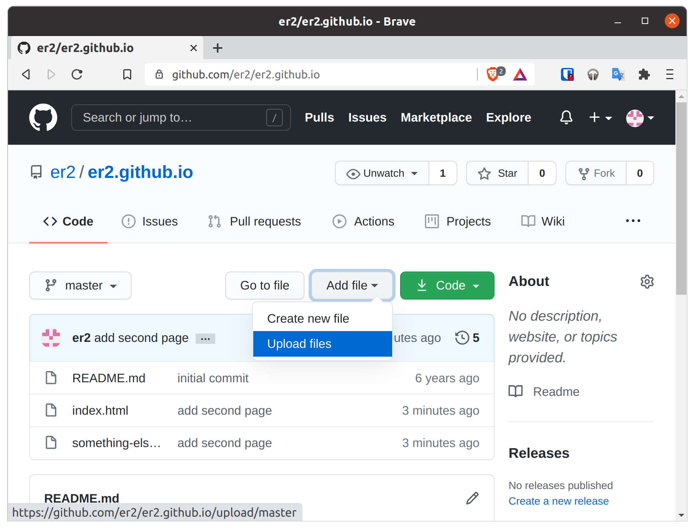

How to Create a Quick and Dirty Free Basic Website
Create your “website” as a document in your favorite word processor.
Save that page as a HTML document named index.html .
Create an account on GitHub
Create a new GitHub Pages repository
Upload index.html to your repository, keeping the default master branch.

(Optional) Use a URL shortener such as bit.ly to create a slightly better looking URL to your page. Without this, the URL to your page will be http://yourgithubusername.github.io/ Alternatively name your file something-else.html for it to appear at http://yourgithubusername.github.io/something-else.html
Note that images will probably be saved next to but not embedded in your HTML file, so they will need to be uploaded additionally.